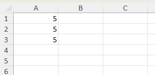
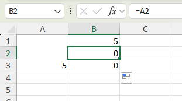
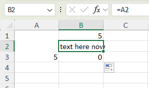

Working with merged cells
Worksheets may contain merged cells. XLSX.jl provides functions to identify the merged cells in a worksheet, to determine if a cell is part of a merged range and to determine the value of a merged cell range from any cell in that range.
julia> using XLSX
julia> f=XLSX.opentemplate("customXml.xlsx")
XLSXFile("customXml.xlsx") containing 2 Worksheets
sheetname size range
-------------------------------------------------
Mock-up 116x11 A1:K116
Document History 17x3 A1:C17
julia> XLSX.getMergedCells(f[1])
25-element Vector{XLSX.CellRange}:
D49:H49
D72:J72
F94:J94
F96:J96
F84:J84
F86:J86
D62:J63
D51:J53
D55:J60
D92:J92
D82:J82
D74:J74
D67:J68
D47:H47
D9:H9
D11:G11
D12:G12
D14:E14
D16:E16
D32:F32
D38:J38
D34:J34
D18:E18
D20:E20
D13:G13
julia> XLSX.isMergedCell(f[1], "D13")
true
julia> XLSX.isMergedCell(f[1], "H13")
false
julia> XLSX.getMergedBaseCell(f[1], "E18") # E18 is a merged cell. The base cell in the merged range is D18.
(baseCell = D18, baseValue = "Here") # The base cell in the merged range is D18 and it's value is "Here".It is also possible to create new merged cells:
julia> XLSX.isMergedCell(f[1], "F5")
false
julia> XLSX.isMergedCell(f[1], "J8")
false
julia> XLSX.mergeCells(s, "F5:J8")
julia> s["F5"] = pi
π = 3.1415926535897...
julia> XLSX.isMergedCell(f[1], "J8")
true
julia> XLSX.isMergedCell(f[1], "F5")
true
julia> XLSX.getMergedBaseCell(f[1], "J8")
(baseCell = F5, baseValue = 3.141592653589793)It is not allowed to create new merged cells that overlap at all with any existing merged cells.
It is possible to write into any merged cell using XLSX.jl, even those that are not the base cell of the merged range. This is illustrated below:
julia> using XLSX
julia> f=XLSX.newxlsx()
XLSXFile("C:\...\blank.xlsx") containing 1 Worksheet
sheetname size range
-------------------------------------------------
Sheet1 1x1 A1:A1
julia> s=f[1]
1×1 XLSX.Worksheet: ["Sheet1"](A1:A1)
julia> s["A1:A3"]=5
5This produces the simple sheet shown.

Merging the three cells A1:A3 sets the cells A2 and A3 to missing just as Excel does.
julia> s["A1"]
5
julia> s["A2"]
5
julia> s["A3"]
5
julia> XLSX.mergeCells(s, "A1:A3")
0
julia> s["A1"]
5
julia> s["A2"]
missing
julia> s["A3"]
missing
However, even after the merge, it is possible to explicitly write into the merged cells. These written values will not be visible in Excel but can still be accessed by reference.
julia> s["A2"]="text here now"
"text here now"
julia> s["A1"]
5
julia> s["A2"]
"text here now"
julia> s["A3"]
missing
julia> XLSX.getMergedBaseCell(s, "A2")
(baseCell = A1, baseValue = 5)
The cell A2 remains merged, and this is how Excel displays it. The assigned cell value won't be visible in Excel, but it can be referenced in a formula as shown here, where cell B2 references cell A2 in its formula ("=A2"):

Assigning values to cells in a merged range like this is prevented in Excel itself by the UI although it is possible using VBA. There is currently no check to prevent this in XLSX.jl. See #241